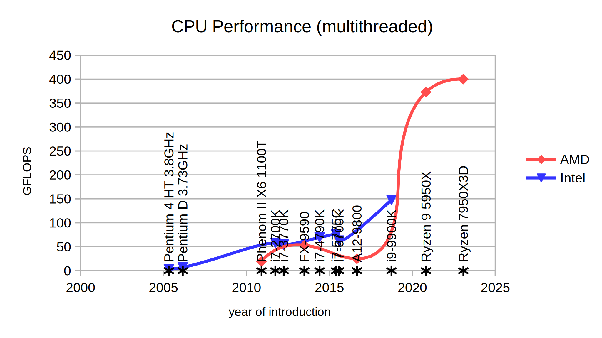
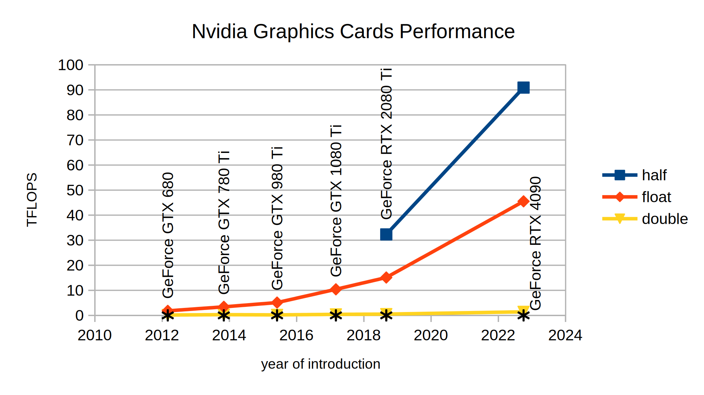
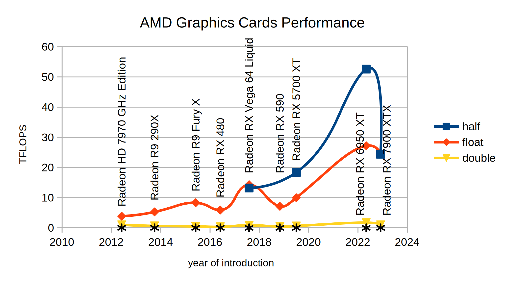

GPU architecture and GPU performance are closely related topics. We will deal with both of them in this article.
First, a little of supercomputing history. The performance of 1 GFLOPS (Giga FLoating Operations Per Second) was broken by Cray-2 supercomputer in 1985 while consuming 150-200kW. 1 TFLOPS was reached by ASCI Red in 1997 built on the space of 1600 sq ft (150m2). It was built to replace real nuclear tests by computer simulation. 1 PFLOPS was broken by Roadrunner supercomputer in 2008. It weighted 200'000 lbs (225'000 kg). 1 exaFLOPS was overcome in 2022 by Frontier consisting of almost 10'000 64-core CPUs and almost 40'000 GPUs. As we can see, the performance increases roughly 1000 times each 12 years, or 10 times each 4 years.
Is this growth of supercomputers power based on growing performance of CPUs? To find an answer, let's measure the performance of CPUs. We can use our application we are developing in this article series. All we need is to use llvmpipe Vulkan device that runs entirely on CPU. The llvmpipe device is usually available on Linux by default. On Windows, we need to install llvmpipe driver. The procedure is described in the second article of this tutorial called Development Tools in the section describing Windows Sandbox and its use for Vulkan application testing (link).
We want to measure the performance of single core and all cores.
The environment variable LP_NUM_THREADS can be used for the purpose.
Running LP_NUM_THREADS=1 ./2-6-ArchitectureInfo llvmpipe
will measure the performance of single threaded computation.
On Windows, we can use command line and type set LP_NUM_THREADS=1 && 2-6-ArchitectureInfo.exe llvmpipe
or set the environment variable inside Visual Studio.
On four cores capable of executing eight threads, we can set LP_NUM_THREADS to 8.
Using 16 on such machine might still bring improvement on some platforms, but might also bring the reduction in performance on others.
The single threaded performance of various CPUs is shown on the following figure:

As we can see, CPU single-threaded performance is stagnating. It even did not doubled in a decade. Let's see if growing number of cores improves the situation:
The multithreaded performance using all available cores grows much better. Using rough estimation, it might be ten times per decade. Anyway, we would need, roughly said, million of processors to build the fastest computer on the world. Let's see if GPUs could provide better solution:
| GPU name | half (float16) performance | float (float32) performance | double (float64) performance |
| GeForce RTX 4090 | 90.9 | 45.5 | 1.41 |
| GeForce RTX 2080 Ti | 32.3 | 15.1 | 0.501 |
| GeForce GTX 1080 Ti | - | 10.4 | 0.401 |
| GeForce GTX 980 Ti | - | 5.10 | 0.192 |
| GeForce GTX 780 Ti | - | 3.40 | 0.278 |
| GeForce GTX 680 | - | 1.80 | 0.141 |

| GPU name | half (float16) performance | float (float32) performance | double (float64) performance |
| Radeon RX 7900 XTX | 24.4 | 24.4 | 0.966 |
| Radeon RX 6950 XT | 52.6 | 27.2 | 1.72 |
| Radeon RX 5700 XT | 18.4 | 9.96 | 0.630 |
| Radeon RX 590 | - | 7.13 | 0.443 |
| Radeon RX Vega 64 Liquid | 13.2 | 14.3 | 0.849 |
| Radeon RX 480 | - | 5.90 | 0.366 |
| Radeon R9 Fury X | - | 8.31 | 0.480 |
| Radeon R9 290X | - | 5.28 | 0.653 |
| Radeon HD 7970 GHz Edition | - | 3.87 | 0.987 |
GPUs provides roughly one hundred times better computing performance than multi-core processors and almost ten thousand times when using single-thread CPU performance. Compared to stagnating single threaded CPU performance, GPU performance is still growing. This surely means constant improvements to their architecture. So, what is the architecture of nowadays GPUs?
Very simplified description of GPU architecture follows:

We see GPU in the middle and Graphics and Compute Array as one of its core components. It is here where all the shader computations are done. Around, we see Graphics Memory connected by very high speed interface to the GPU. We see Bus Interface connecting GPU with CPU, memory and other devices, usually using PCI Express or other bus. Finally, we see Display Interface sending the content to the screen.
Our further interest will be on Graphics and Compute Array on typical hardware today. The basic building block of Graphics and Compute Array is called Streaming Multiprocessor (SM) by Nvidia and Work-group Processor (WGP) by AMD. There are typically many of them on the GPU.
Each Streaming Multiprocessor (SM) or Work-group Processor (WGP) is composed of many processing elements. AMD calls them Shader Processors (SP) and Nvidia cores.
On AMD platforms, each SP utilizes scalar and vector ALU for computations. On Nvidia hardware, the cores are of various types: CUDA, Tensor, RT, and others might appear in the future. RT cores are for ray tracing, tensor cores are specialized on matrix operations using reduced precision, which is useful, for example, in AI. CUDA cores are the place where float32 and int32 operations are usually executed. CUDA cores are also called unified shaders or Shader Processors (SP). Nvidia sometimes divides them to FP32 cores and INT32 cores if some cores cannot execute both types of operations.
Now, let's dive more deeply into the whole architecture. The architecture is evolving between generations, but usually stays the same in main principles. So, we will introduce these principles on GeForce RTX 4090 and Radeon RX 7900 XTX including particular numbers from these chips.
AMD divides each WGP into two Compute Units (CU). Each CU has two SIMD32's. Each SIMD32 contains a scalar ALU and vector ALU. The vector ALU contains 32 SP. Thus, each time single instruction is scheduled for particular SIMD and its vector ALU, it is executed at once for 32 threads in 32 SP. The group of 32 threads is called Warp or wave or wavefront. All threads in warp are executed in parallel in SIMD. AMD supports warps of 64 threads as well by joining two SIMD together.
On Nvidia, each SM is partitioned into four processing blocks. Each processing block contains 32 CUDA cores, also called Shader Processors (SP). When instruction is scheduled for particular processing block, it is executed for 32 threads on 32 SP. The group of 32 threads is called Warp.
From high-level view, GPU is composed of many SMs or WGPs. They are organized into hierarchy as well. Let's start with the output of our example:
Compatible devices: 1: AMD Radeon RX 7900 XTX (compute queue: 0, type: DiscreteGpu) 2: AMD Radeon RX 7900 XTX (compute queue: 1, type: DiscreteGpu) Using device: AMD Radeon RX 7900 XTX Vulkan info: Instance version: 1.3.290 Device name: AMD Radeon RX 7900 XTX VendorID: 0x1002 (AMD/ATI) DeviceID: 0x744c Device type: DiscreteGpu Device version: 1.3.292 Driver version: 2.0.317 (0x80013d) Driver name: AMD proprietary driver Driver info: 24.10.1 (LLPC) Driver id: AmdProprietary Driver conformance version: 1.3.5.2 Device architecture info: Shader engine count: 6 Shader arrays per engine: 2 Compute units per shader array: 8 Active compute units: 96 SIMDs per compute unit: 2 Half (float16) performance: 11.8 PFLOPS (Q1: 11.8 PFLOPS Q3: 11.8 PFLOPS) Float (float32) performance: 26.8 TFLOPS (Q1: 26.7 TFLOPS Q3: 26.9 TFLOPS) Double (float64) performance: 1.10 TFLOPS (Q1: 1.10 TFLOPS Q3: 1.10 TFLOPS)
Vulkan info part prints the data from vk::PhysicalDeviceProperties and vk::PhysicalDeviceVulkan12Properties. Device architecture info is retrieved using VK_AMD_shader_core_properties and VK_AMD_shader_core_properties2 extensions.
The information in bold is of our interest at the moment. AMD uses Shader Engine (SE) as high-level organizational unit. Radeon RX 7900 XTX contains 6 of them. Each SE contains two Shader Arrays (SA). Each SA contains 8 CU. In total, Radeon RX 9070 XT contains 6x2x8 = 96 CU, or 48 WGP. Then, each CU contains 2 SIMD. And each SIMD contains 32 SP. Thus, we have 96x2x32 = 6144 SP inside RX 7900 XTX.
Let's take a look on Nvidia:
$ ./2-6-ArchitectureInfo Compatible devices: 1: NVIDIA GeForce RTX 4090 (compute queue: 0, type: DiscreteGpu) 2: NVIDIA GeForce RTX 4090 (compute queue: 2, type: DiscreteGpu) 3: AMD Radeon Graphics (RADV RAPHAEL_MENDOCINO) (compute queue: 0, type: IntegratedGpu) 4: AMD Radeon Graphics (RADV RAPHAEL_MENDOCINO) (compute queue: 1, type: IntegratedGpu) 5: llvmpipe (LLVM 19.1.1, 256 bits) (compute queue: 0, type: Cpu) Using device: NVIDIA GeForce RTX 4090 Vulkan info: Instance version: 1.3.296 Device name: NVIDIA GeForce RTX 4090 VendorID: 0x10de (Nvidia) DeviceID: 0x2684 Device type: DiscreteGpu Device version: 1.4.303 Driver version: 570.133.20.0 (0x8ea14500) Driver name: NVIDIA Driver info: 570.133.20 Driver id: NvidiaProprietary Driver conformance version: 1.4.1.0 Device architecture info: Streaming multiprocessor count: 128 Warps per streaming multiprocessor: 48 Half (float16) performance: 90.9 TFLOPS (Q1: 90.9 TFLOPS Q3: 90.9 TFLOPS) Float (float32) performance: 45.5 TFLOPS (Q1: 45.5 TFLOPS Q3: 45.5 TFLOPS) Double (float64) performance: 1.41 TFLOPS (Q1: 1.41 TFLOPS Q3: 1.41 TFLOPS)
As we can see, Nvidia is not sharing too much info through its VK_NV_shader_sm_builtins Vulkan extension, unfortunately. We see that GeForce RTX 4090 contains 128 SMs. For more information, we need to look elsewhere. Nvidia Ada Gpu Architecture document provides much more insight. Nvidia uses Graphics Processing Cluster (GPC) as high-level building block. GeForce RTX 4090 chip contains 12 of them, but since some might be defective by lithography and manufacturing process, only 11 is active. Each GPC contains rasterizer unit and 6 Texture Processing Clusters (TPC). Each TPC is composed of two SM. So, we have 11x6x2 = 132 SM in total. Again, some TPCs might be defective. So there is only 128 SM active out of 132. Each SM is partitioned into four processing blocks and each block contains 32 SP (or cores). So, we get 128x4x32 = 16'384 SP.
Compute shaders are dispatched in global workgroups (also called grids). Each dispatch command (vkCmdDispatch and similar ones) starts single global workgroup. Each global workgroup is composed of local workgroups (also called blocks or thread blocks). The number of local workgroups inside global workgroup is given parameters passed in dispatch command. Local workgroups are usually distributed among available SMs or CUs. In other words, a local workgroup cannot be split between two SMs or CUs, but must reside on one SM or CU. Each local workgroup is composed of shader invocations (in other APIs, shader invocations are also called kernels or threads). The shader invocations are divided into groups called warps. Standard warp size is 32. These warps are then executed in lock-step on SPs. Each SP is executing one shader invocation.
Other shader types, like vertex and fragment shaders, for instance, execute in the similar way. We just do not see the work distribution into local workgroups, into the warps, and so on. But it happens in the similar way.